硬件抽象层（HAL）
一. 概念
1.1 软件系统的价值维度
对于每个软件系统，都可以通过行为和架构两个维度来体现它的实际价值
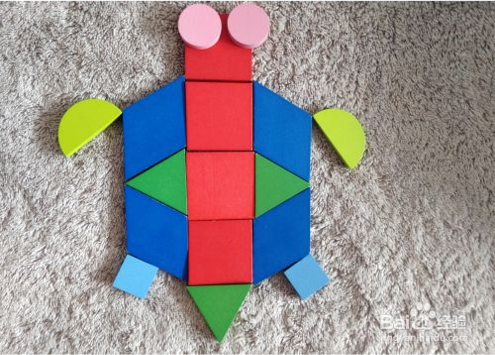◆ 行为价值
软件系统的行为价值是其最直接的价值维度，程序员的工作就是让机器按照某种指定的方式运转，给系统的使用者创造或者提高利润。 程序员为了达到这个目的，往往需要帮助系统使用者编写一个对系统功能的定义，也就是需求文档。然后转化为实际的代码。
当机器出现异常行为时，程序员要负责调试，解决这些问题。
大部分的程序员认为这就是他们全部工作。按照需求文档编写代码，并且修复bug。
◆ 架构价值
系统的架构价值，体现在软件这个英文单词上：software。“ware”的意思是“产品”，而“soft”的意思是指软件的灵活性。
软件系统必须保持灵活。软件发明的目的，就是让我们可以以一种灵活的方式来改变及其的工作行为，对及其上那些很难改变的工作行为，我们通常称之为 “hardware”。
为了达到这个目的，软件必须够“软”，也就是说，软件应该容易被修改。当需求方改变需求时，随之所需的软件变更必须可以简单而方便地实现。 变更实施的难度应该和变更的范畴（scope）成等比关系，而与变更的具体形状（shape）无关。
需求的变更范畴与形状，是决定对应软件变更实施成本高低的关键。
从系统相关方的角度来看，他们提出的一系列的变更需求的范畴都是类似的，因此成本也应该是固定的。 但是从研发者的角度来看，系统用户持续不断的变更需求就像是要求我们不停地用一堆不同形状的拼图，拼成一个新的形状。 整个拼图古城越来越困难，因为现在系统的形状永远和需求的形状不一致。
问题的实际根源当然就是系统的架构设计。如果系统的架构设计偏向于某种特定的“形状”，那么新的变更就会越来越难以实施。 所以，好的系统架构设计应该尽可能做到与“形状”无关。
哪个价值维度更重要？◆ 如果程序可以正常工作，但是无法修改，那么当需求变更的时候他就不再能够正常工作了，我们也无法通过修改让他继续能正常工作。 因此这个程序的价值将成为0。
◆ 如果程序无法正常工作，但是我们可以很容易的修改它，那么它将改好，并且随着需求的变化不停地修改它，都应该是很容易的事。 因此这个程序会持续产生价值。
当然理论上没有什么程序是不能被修改的。但是现实中有一些系统确实无法修改，因为其变更实施的成本会远远超过变更带来的价值。
如果拿这个问题去问业务部门，是否想要能够变更需求，他们的回答一般是肯定的，而且他们会增加一句：完成现在的功能比实现未来的灵活度更重要。 但讽刺的是，如果事后业务部门提出一项需求，而你的预估工作量大大超出他们的预期，这帮家伙通常会对你放任系统混乱到无法变更勃然大怒。
◆ 艾森豪威尔矩阵
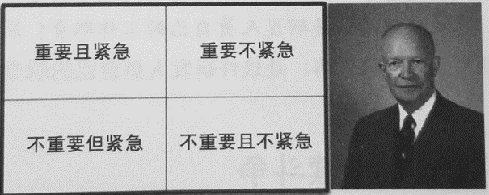系统行为，是紧急的，但不总是特别重要。
系统的架构，是重要的，但不总是紧急的。
当我们面对紧急的事情时，我们往往会忽略重要的事情。这就是为什么我们总是在系统中留下一堆烂摊子的原因。
最终，我们将这四类事情进行排序如下：
① 重要且紧急
② 重要但不紧急
③ 不重要但紧急
④ 不重要也不紧急
我们应该尽可能地把事情安排在第二类，因为这是最重要的事情。但是，我们总是被第三类事情所迫，因为他们是紧急的。
研发人员的职责就是从公司长远利益出发与其他部门“斗争”，就要为好的软件架构做好“长期斗争”准备。 如果忽视软件架构的价值，系统将会变得越来越难以维护，终会有一天，系统将会变得再也无法修改。1.2 抽象
抽象是从众多的事物中抽取出共同的、本质性的特征，而舍弃其非本质的特征，将它们概括为一般概念或思想的过程。
用洗衣机来洗衣服，把衣服丢进去，按几个按钮就可以完成清洗的工作。你不需要知道恒温器器把水温加热了多少度，阀门放了多少水以及转动速度？ 显然是你不需要知道的。所以这个洗衣机对你来说就是抽象的，提供了你所需要关心的内容，而隐藏了对你来说无关紧要的实现细节
1.3 依赖
程序员想要调用的附加代码。添加依赖可以避免重复已经完成的工作（设计、编写、测试、调试和维护特定的代码单元）。 在软件开发中，我们通常把这些代码单元称作为包、库或者模块。包括直接依赖和间接依赖。
1.4 稳定性、稳定依赖原则和依赖反转原则
将一个硬币立起来放，你会认为它处于一个稳定的位置吗？当然不会。然而，除非受到外界因素的干扰，否则硬币本身可以在这个位置保持相当长的一段时间。那为什么我们却并不认为它是稳定的呢？
下面来看看“稳定”在字典中的描述：稳定指的是“很难移动”。
所以稳定性应该与变更所需的工作量有关，与变更的频繁度无关。例如，硬币是不稳定的，因为只需要很小的动作就可以推倒它，而桌子则是稳定的，因为掀翻它需要很大的动作。
那么将这套理论放在在软件开发的问题上呢？
软件组件的变更困难度与很多因素有关，例如代码的体量大小、复杂度、清晰度等。 我们在这里暂且忽略掉这些因素，集中讨论一个特别的因素->依赖关系，让一个组件难以修改的一个最直接的办法就是让很多其他组件依赖于它。 带有许多入向依赖关系的组件是非常稳定的，因为它的任何变更都需要应用到所有依赖它的组件上。
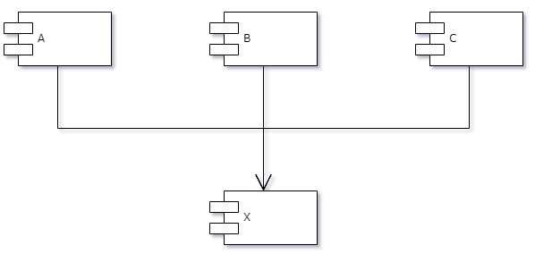上图中，x 是一个稳定的组件。因为有三个组件依赖着 x ，所以 x 有三个不应该被修改的原因。就是说 x 要对三个组件负责。另一方面，x 不需要依赖于任何组件，所以不会有任何原因导致它需要被变更，我们称之为“独立”组件。
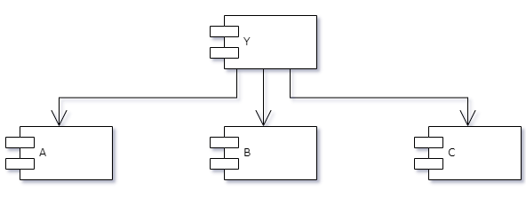上图中，Y 是一个非常不稳定的组件。由于没有其他组件依赖 Y ，所以 Y 并不对任何组件负责。但因为 Y 是有依赖性的组件，同时依赖与三个组件，所以他的变更就可能有三个不同的源。
◆ 稳定性指标
①Fan-in: 入向依赖，这个指标指代了组件外部依赖于组件内部的数量。
②Fan-out: 出向依赖，这个指标指代了组件内部依赖于组件外部的数量。
③I: Instability，稳定性指标，I = Fan-out / ( Fan-in + Fan-out)，这个指标指代了组件的稳定性，范围是 0-1 之间。0 意味着组件最稳定，1 意味着组件最不稳定。
◆ 稳定依赖原则
稳定依赖原则的要求是让每个组件的 I 指标都必须大于其依赖组件的指标。也就是说，组件依赖图中各组件的 I 指标必须要按其依赖关系方向递减。 这样将确保 变更的组件更容易更改，并且其他人依赖的稳定的组件不会经常更改。
构建组件时，你愿意依赖于一个稳定的组件还是一个不稳定的组件？答案是显而易见的，我们更希望依赖于一个更加稳定（不容易被修改）的组件，因为每次你所依赖的组件发生变更，意味着你要做许多工作去验证，以确保组件的正常运行。
这里提出了一个测试的问题，假如我们有一版已经通过测试的软件，做版本升级的时候，测试出了bug。我们解决完bug，重新提交测试的时候，应该要全部重新测试吗？ 其实不是的，我们只需要测试这个组件和依赖它的组件即可。所以一个软件系统有一个良好的架构支持，那它的测试应该也是很清晰的，确定的行为。
并不是所有组件都应该是稳定的如果一个系统所有组件都处于最高稳定性状态，那么系统就一定无法再进行变更了，这显然不是我们想要的。事实上，我们设计组件架构的目的就是要决定让哪些组件稳定，让哪些组件不稳定。
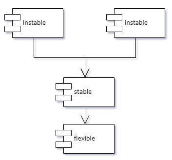上图中，flexible 是在设计中要确保其易于变更的组件，因此我们会希望 flexible 是最不稳定的。然而stable组件却引入的对于 flexible组件的依赖。 这种情况就违反了稳定依赖原则，这将导致flexible组件的变更难度大大增加。
想要修复这个问题，就必须将 stable 与 flexible 这两个组件之间的依赖关系打破。 为此，我们就需要了解这个依赖关系到底为什么会存在，这里假设是因为 stable 组件中使用到了 flexible 组件中的资源。如下图
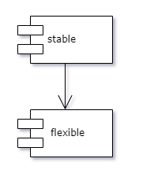我们可以用依赖反转原则来修复这个问题，具体说就是创造一个 user 组件，并在其中设置一些接口，确保这些接口包含了所有 func 需要的函数， 再让 flexible 去实现这些接口。如下图所示
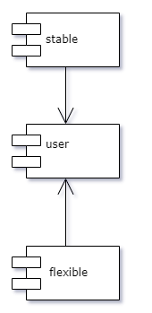这样一来，我们就打破了这条依赖关系，强迫两个组件都依赖于 user 。现在 user 组件会是非常稳定的，而 flexible 组件就变成不稳定的状态了。 这种组件称之为抽象组件，抽象组件通常会非常稳定，可以被那些相对不稳定的组件所依赖。
1.5 硬件抽象层
“虽然软件本身并不会随着时间推移而磨损，但硬件及其固件却会随着时间推移而过时，随即也需要对软件做出相应改动”
①软件本身的质量不会随着时间的推移而损耗。
②但是未妥善管理的硬件和固件依赖确是软件的头号杀手。
硬件抽象层（Hardware Abstraction Layer，HAL）是一种设计模式，它允许软件工程师在不同的硬件平台上编写一致的代码，而不必考虑底层硬件的差异性。 硬件抽象层是位于操作系统 内核与硬件电路之间的接口层，其目的在于将硬件抽象化。它隐藏了特定平台的硬件接口细节,为操作系统提供虚拟硬件平台,使其具有硬件无关性,可在多种平台上进行移植。 从软硬件测试的角度来看，软硬件的测试工作都可分别基于硬件抽象层来完成，使得软硬件测试工作的并行进行成为可能。
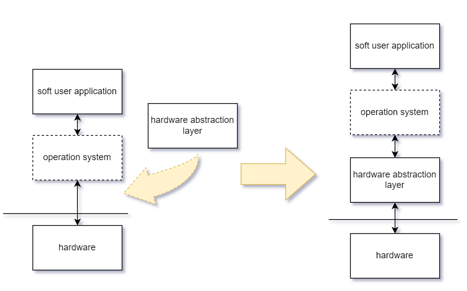二. 设计方法
2.1 了解硬件
设计人员必须对与之交互的硬件有全面的了解。这包括了解硬件的电气特性，通信协议以及任何其他相关细节。
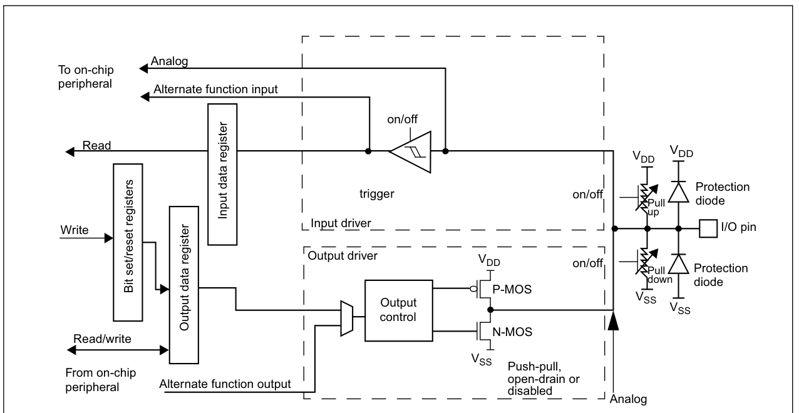2.2 确定关键抽象
设计人员必须确定用于表示硬件的关键抽象。这些抽象应该是高级别的，将硬件实现的细节隐藏起来，使其对系统的其他部分不可见。
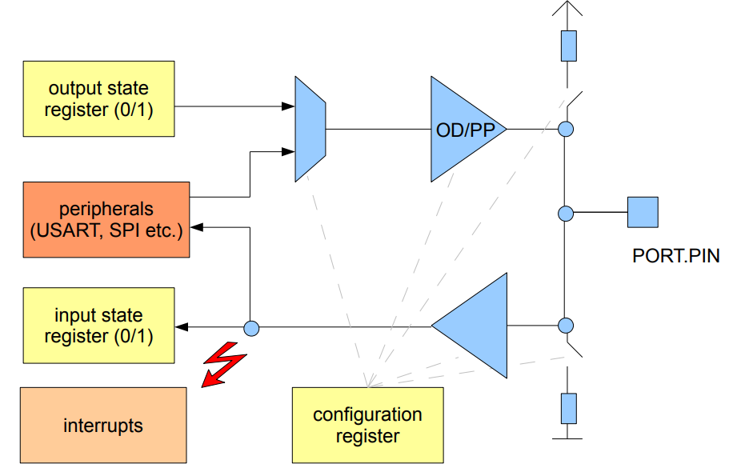2.3 定义API
确定关键抽象之后，设计人员必须定义API，允许高层的软件通过HAL与硬件交互。API应该极可能简单直观，同时需要满足访问所有必要功能的能力。
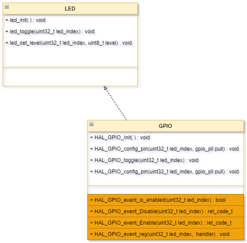2.4 实现HAL
定义API之后，设计人员实现HAL，通过涉及编写直接与硬件交互的低级代码，以及将硬件特定的细节映射到API中定义的高级抽象代码。
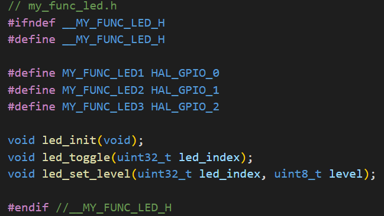 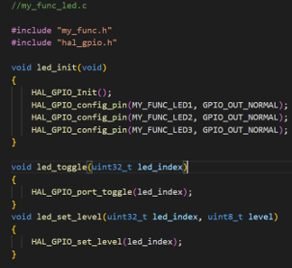2.5 测试与改进
设计人员必须测试HAL，以确保其正确地实现了API。如果发现错误，设计人员必须修改HAL，直到其正确地实现了API。设计人员还应该在之后的客户反馈等不断改进HAL。